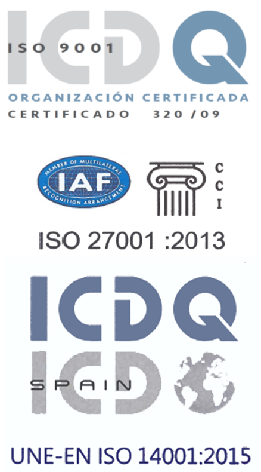

Oposiciones
Preparación para oposiciones de la Junta de Castilla y León, SACYL, Diputación de León y administración local. Temarios actualizados y profesorado experto.
Ver oposiciones
Oposiciones, informática, mecanografía, formación gratuita para desempleados y agencia de colocación. En pleno centro de León, con certificaciones ISO de calidad.

Academia Logos es un centro de formación en León que lleva más de cuatro décadas impartiendo formación privada y subvencionada. Nuestra oferta formativa está diseñada para facilitar una óptima inserción en el mercado laboral.
Contamos con las certificaciones ISO 9001:2015, UNE-EN ISO 14001:2015 e ISO 27001:2013, que garantizan la calidad de nuestra enseñanza.
Programas presenciales, online y gratuitos adaptados a tus necesidades. Preparamos para las principales oposiciones de Castilla y León.
Preparación para oposiciones de la Junta de Castilla y León, SACYL, Diputación de León y administración local. Temarios actualizados y profesorado experto.
Ver oposicionesCursos personalizados de Word, Excel, PowerPoint, Access e Internet. Todos los niveles, a tu ritmo, con incorporación continua.
Ver informáticaAprende mecanografía al tacto con la técnica correcta de posicionamiento de manos. Tests periódicos de velocidad y precisión.
Ver mecanografíaCursos subvencionados del plan FOD y SEPE para personas en situación de desempleo. Certificados de profesionalidad con prácticas en empresa.
Ver formación gratuitaAgencia de colocación autorizada. Servicio gratuito de intermediación laboral para demandantes de empleo y empresas.
Ver bolsa de trabajoFormación online en psicología aplicada a las ventas y trámites con la Seguridad Social. Aprende a tu ritmo desde cualquier lugar.
Ver teleformaciónMás de cuatro décadas trabajando con un objetivo claro: que cada alumno alcance sus metas profesionales con la mejor preparación posible.
Nos adaptamos al perfil y necesidades de cada alumno para satisfacer eficazmente lo que se demanda en el mercado laboral.
Certificaciones ISO 9001, ISO 14001 e ISO 27001 que avalan la excelencia de nuestros procesos formativos y de gestión.
Agencia de colocación autorizada y bolsa de trabajo activa para conectar a nuestros alumnos con oportunidades reales de empleo.
Tanto si buscas preparar una oposición cómo si necesitas formarte en informática, mecanografía o cualquiera de nuestros programas, estamos a tu disposición para asesorarte y orientarte.
Puedes visitarnos en nuestras instalaciones de la C/ Burgo Nuevo 4, 1o, en pleno centro de León, llamarnos o escribirnos por WhatsApp.
Ofrecemos formación presencial en informática (todos los niveles), mecanografía, preparación de oposiciones (Junta de Castilla y León, SACYL, Diputación, administración local), formación gratuita subvencionada para desempleados y teleformación online.
Academia Logos lleva más de 40 años impartiendo formación privada y subvencionada en León, siendo un referente en la preparación de oposiciones y la formación profesional en la ciudad.
Si. Contamos con las certificaciones ISO 9001:2015, UNE-EN ISO 14001:2015 e ISO 27001:2013, lo que garantiza un sistema de gestión de calidad, medioambiental y de seguridad de la información.
Estamos en la C/ Burgo Nuevo 4, 1o, 24001 León. En pleno centro de la ciudad, muy bien comunicada y accesible.
Si. A través de los planes FOD y el SEPE, ofrecemos cursos gratuitos para personas en situación de desempleo, con certificados de profesionalidad y prácticas en empresa.
Si. Somos Agencia de Colocación autorizada (n.o 0800000085). Ofrecemos un servicio gratuito de intermediación laboral para demandantes de empleo y empresas.
Estamos en pleno centro de León. Contacta con nosotros por teléfono, WhatsApp o email.